Das Kinderbuch "Mein NEUES altes Haus" erzählt die Geschichte der kleinen Lilian, deren hellblaues Haus abgerissen werden soll. Doch dann fragt sich Lilian, warum wir unsere Häuser eigentlich nicht zuerst reparieren und sie schreibt dem Besitzer einen Brief. Hier wird das Thema Nachhaltigkeit und Umbau in Architektur liebevoll den ganz Kleinen näher gebracht.
Mit Texten und Typografie von Korinna Zinovia Weber und handgemalten Illustrationen von Meruert Zharekesheva.
Das Kinderbuch ist in sieben Sprachen als print-on-demand erhältlich! Melden Sie sich bei mir per Email, um die Wartezeit zu verkürzen, denn ich habe immer ein paar wenige auf Vorrat gedruckt.
 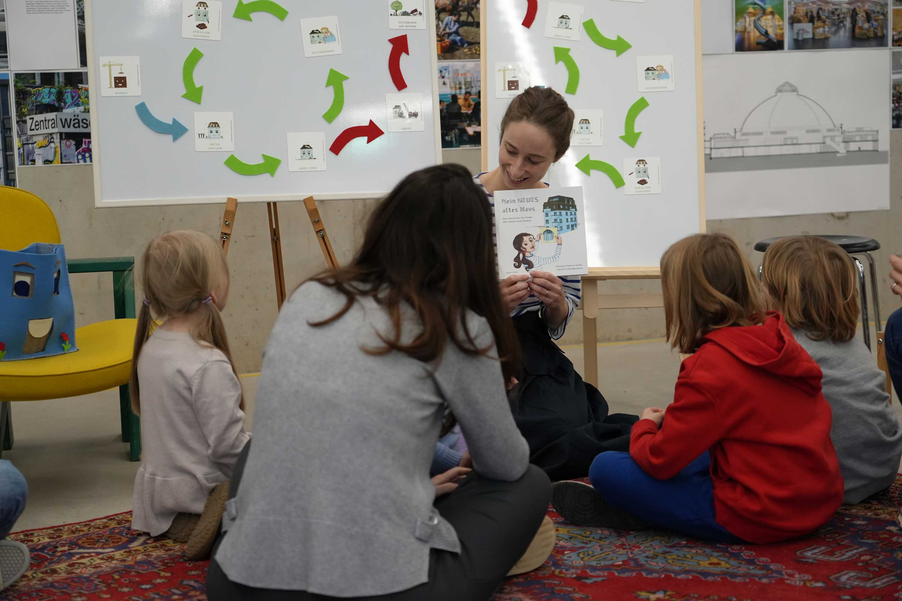
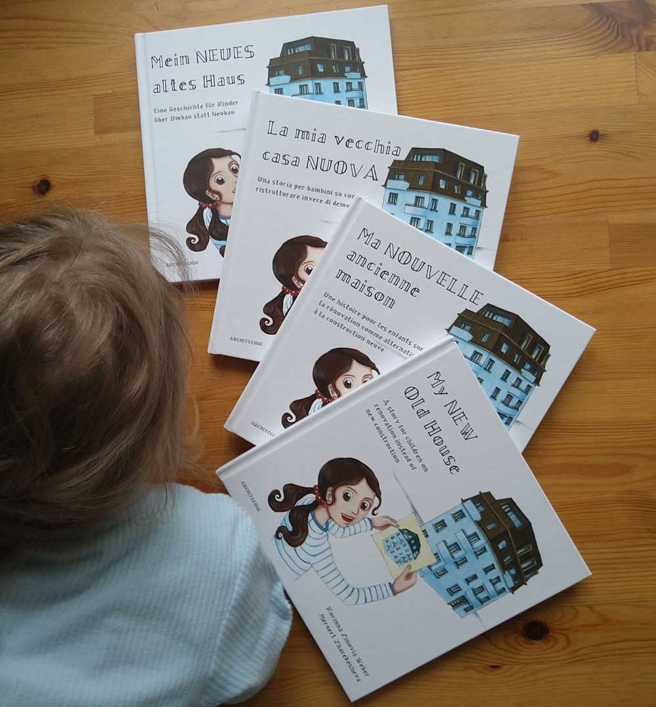
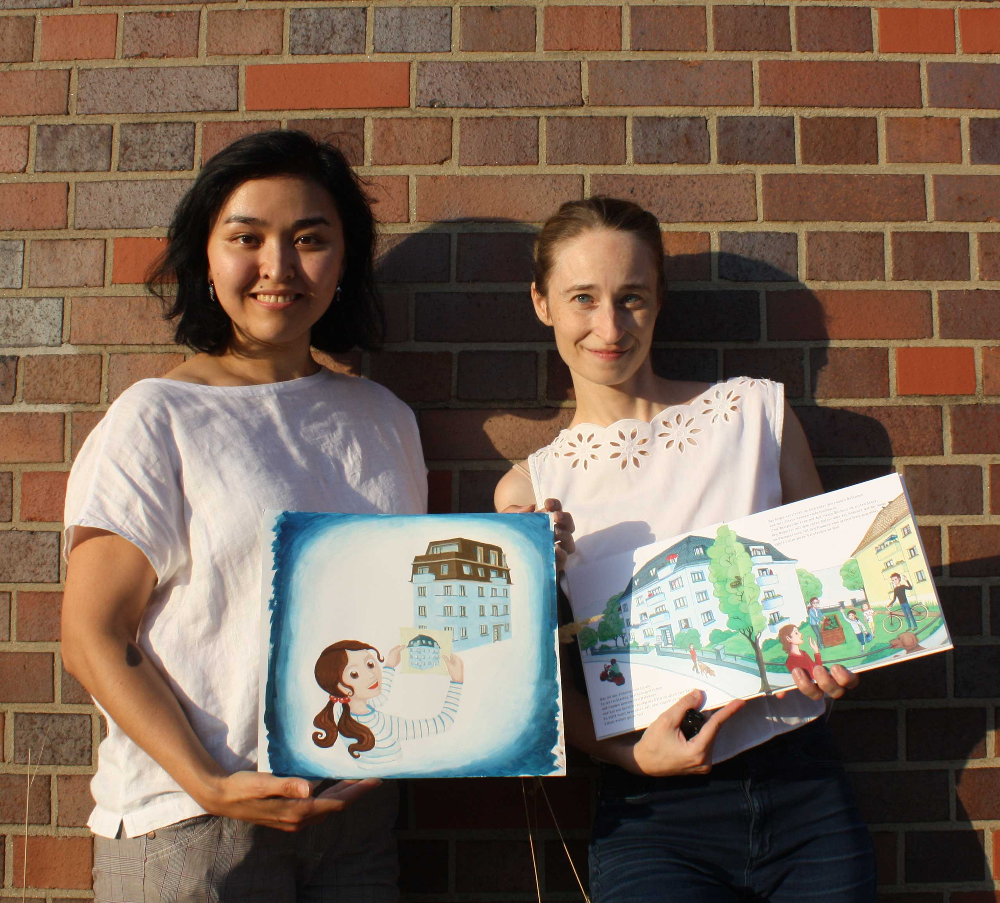
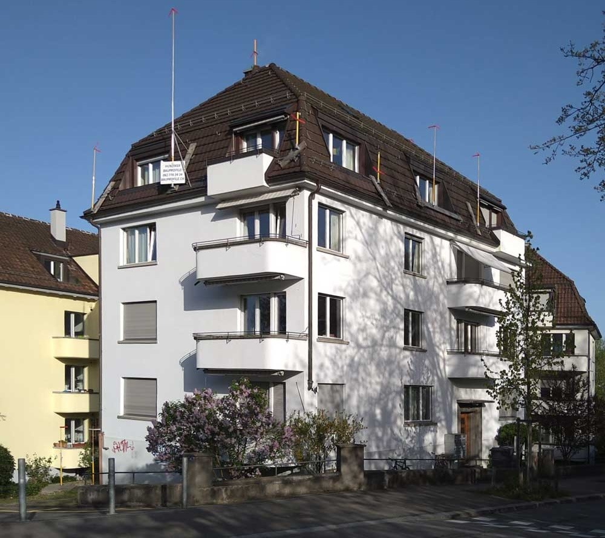
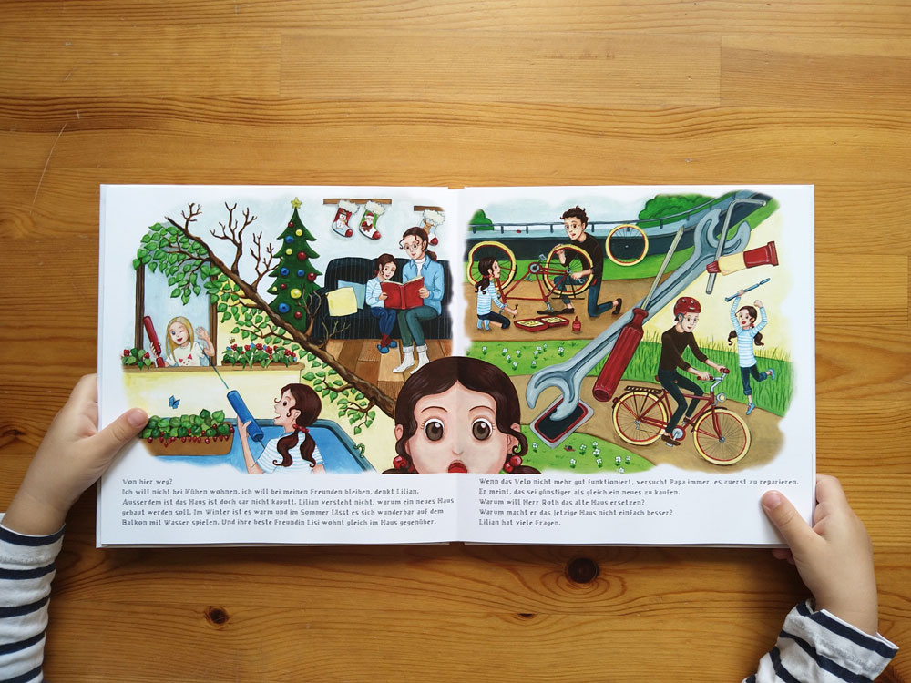
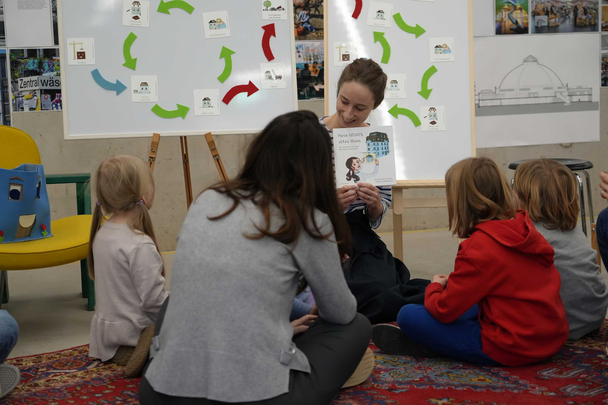
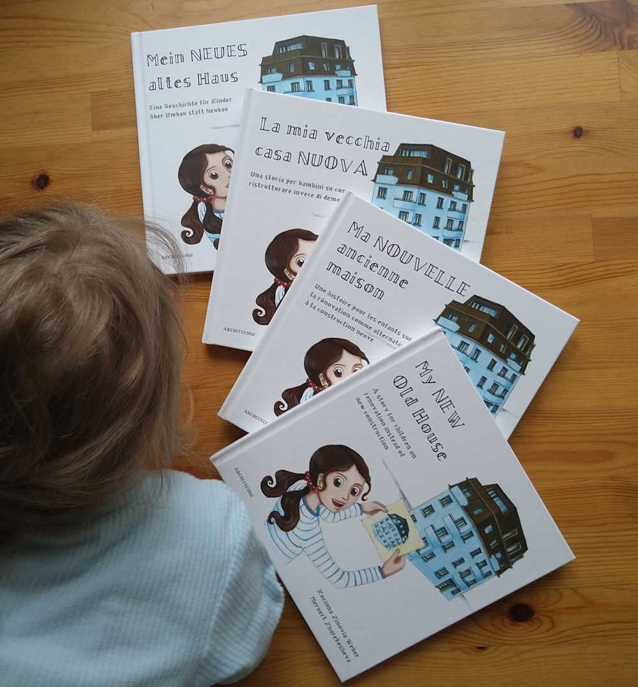
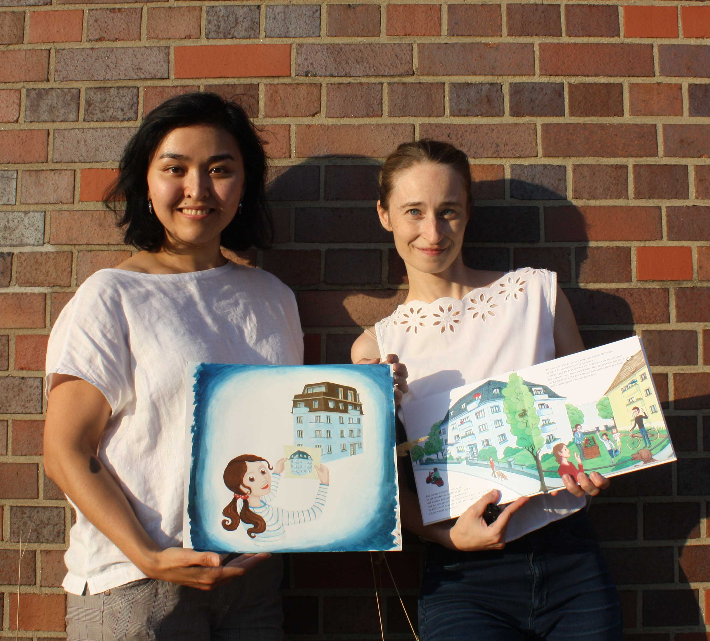
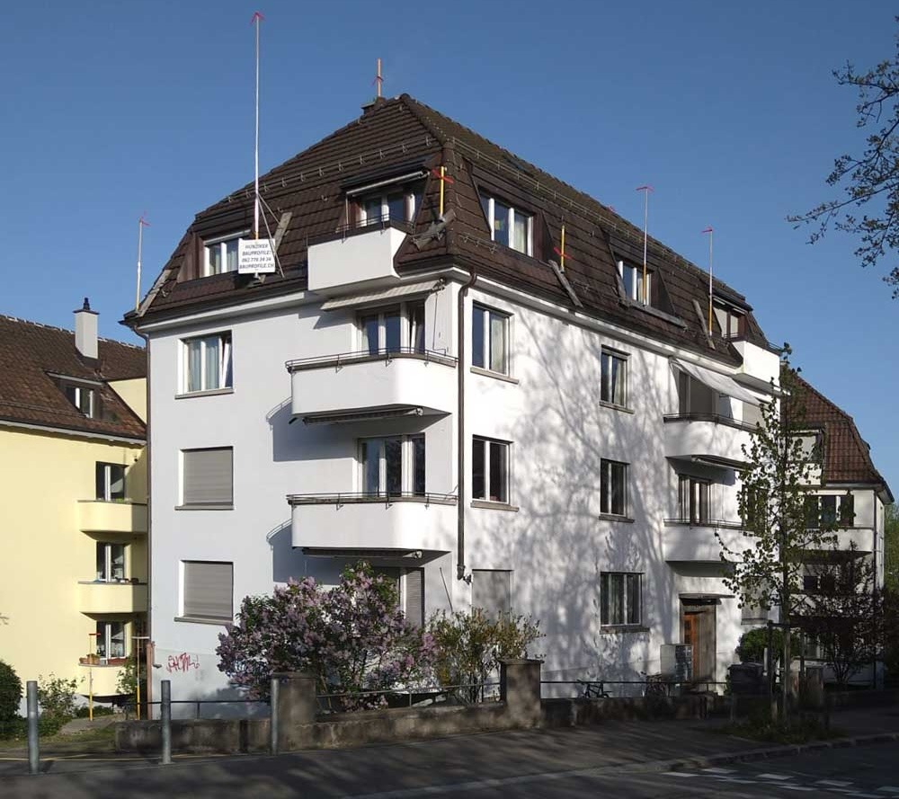
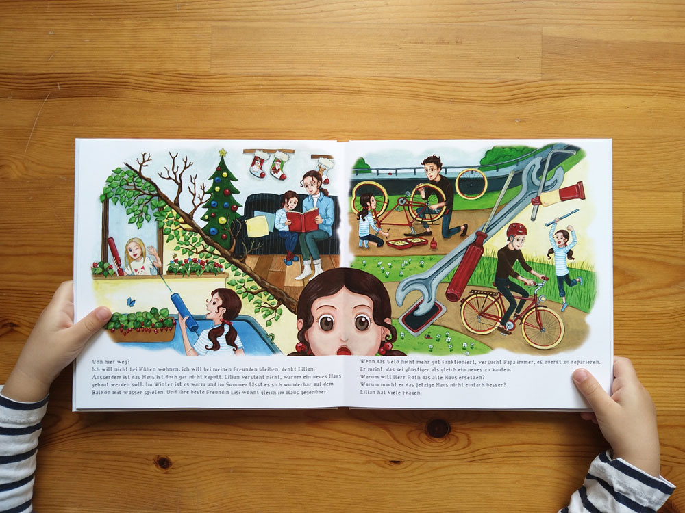
Warum ein Kinderbuch?
Irgendwo in der Schweiz stand ein vierstöckiges Wohnhaus mit Mansardendach, das 1938 erbaut wurde – eine für seine Zeit typische lokale Architektur. Im Jahr 2023 wurde bekannt gegeben, dass es abgerissen und durch ein neues Gebäude ersetzt werden sollte mit ausschließlich winzige Zimmer (9 m²) für Studierende. Die Entscheidung des Eigentümers überraschte die Bewohnerinnen und Bewohner. Einige waren vor kurzem erst eingezogen, darunter eine junge Familie mit einem Neugeborenen. Während sie gegen die Wohnungsknappheit demonstrierten, schaffte es ihr Fall in die lokalen Zeitungen. Dieser Abriss ist nur einer von vielen in der Schweiz, aber auch in anderen Ländern, wo die Gentrifizierung Menschen aus ihren Vierteln verdrängt.
Als ich sah, wie meine Tochter reagierte, als ich ihr erzählte, dass das Haus neben unserem abgerissen werden soll und ihre Freundin deshalb wegziehen muss wurde mir plötzlich klar, dass wir mit unseren Kindern nicht genug über unsere (sich ständig verändernde) gebaute Umwelt sprechen und darüber, wie wir damit umgehen (sollten). Das inspirierte mich dazu, ein Kinderbuch zu diesem Thema zu schreiben.
Mit Liebe zu Details...
Ich schrieb das Manuskript an zwei Nachmittagen. Um mein grob skizziertes Storyboard umzusetzen arbeitete ich mit Meruert Zharekesheva zusammen, die ich seit dem gemeinsamen Architekturstudium mit ihrem Talent für figurliches Zeichnen kenne. Sie fertigte mit Gouache Farben die Bilder von Hand für das Projekt.
Für mein Kinderbuch war ich auf der Suche nach einer Schrift, die den Charakter des Gebäudes von 1938 widerspiegelt und zugleich individuell sowie lizenzfrei ist, um ins kleine Budget zu passen. Bei der Recherche zu dem besagten Nachbarhaus stieß ich auf eine historische Aufnahme von 1940, auf der neben dem Eingang ein Relief mit dem Hausnamen "Langenrain" zu sehen ist, das heute nicht mehr existiert. Inspiriert von diesem Relief schrieb ich das Alphabet von Hand, scannte es und digitalisierte es mit einer Software – so entstand die Schrift „Langenrain“ für das Kinderbuch.
Die Geschichte erforderte einen architektonischen Entwurf für die Aufstockung des sanierten Hauses. Auf Grundlage der Originalpläne des Vorbildhauses hat Meruert ein ein digitales 3D‑Modell erstellt, das den Gestaltungs‑ und Illustrationsprozess unterstützte. Konkretes Vorbild das von Frei + Saarinen Architects in Zürich entworfene Haus in der Agnesstrasse.
Die Geschichte mit dem Filzhaus erleben
Aus dem Kinderbuch habe ich ein Veranstaltungskonzept speziell an Kinder (ab 4 Jahren, jünger willkommen) gerichtet entwickelt. Auf einem Stuhl nimmt ein besonderer Gast Platz: das blaue Filzhaus! Warum ist es traurig, frage ich die Kinder. Dann lese ich aus meinem Buch vor und anschliessend entdecken alle zusammen spielerisch - meist in zwei Gruppen - den Häuserkreislauf. Zum Schluss dürfen Materialien aus dem Haus gezogen werden. Und etwas Kleines zur Erinnerung gibt es auch...
Darf das blaue Filzhaus mit seiner Geschichte zu Besuch kommen?
Fördervermerk
Das Projekt wurde vom Netzwerk Frau und SIA finanziell unterstützt.
Ein besonderer Dank geht an Yvan Delemontey, Pia Grünwald, Jessica Wilcox, Max Tirassa, Margherita Dagnino - sie haben das Lektorat für die verschiedenen Sprachen übernommen. Grosses Danke auch an Hannah van Hove für die flämische und Márti Szagalyi für die ungarische Übersetzung.
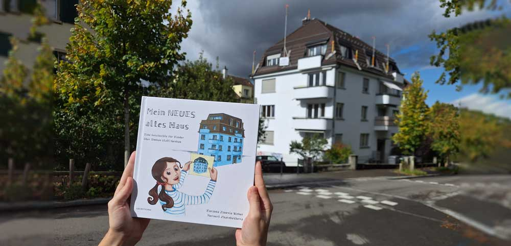Rezensionen
Über das Kinderbuch wurde auf moderne Regional von Karin Berkemann berichtet.
Roland Züger hat es in werk, bauen + wohnen 2025-12 empfohlen.